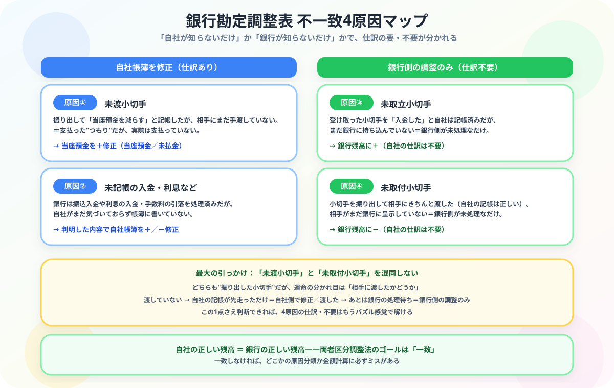

銀行勘定調整表の書き方
不一致の4原因と修正仕訳を図解解説
- 不一致の原因は4種類——未取立小切手・未渡小切手・未通知・誤記入に分類される
- 「自社帳簿を修正するか・銀行残高を調整するか」を原因ごとに判断するのが調整表の核心
- 修正仕訳が必要なのは「自社の記録ミス・未記入」のみ——銀行側の調整項目に仕訳は不要
- 当座借越は期末に「当座預金（資産）→当座借越（負債）」へ振り替えて正しく表示する
こんにちは、大谷です！
正直に告白すると、初めて銀行勘定調整表を見たとき、自社の帳簿残高と銀行の残高証明書の数字が1円も一致しなくて「うわっ、なんじゃこりゃ……！同じ会社の同じ口座なのに、なんで数字が違うんだよ！」と本気で脳内パニックを起こしました（笑）。
でも実はこれ、犯人探しでもバグでもなくて、【会社と銀行のタイムラグドラマ】なんです。「会社はもう知っているのに銀行がまだ知らない」「銀行はもう知っているのに会社がまだ知らない」——このズレの正体さえ見抜けば、電卓を叩く前にゲーム感覚で一瞬で解けます。今日はその見抜き方を、当時パニックだった僕の目線で余すことなくお伝えします！
また、記事の末尾のほうにある【いいねボタン】をポチッと押してもらえると、めちゃくちゃ嬉しいです！
❓ ① 不一致が起こる4つの原因——「自社側」か「銀行側」か、原因を分類する

図解のポイントは「どちら側の問題か」で対処が変わることです。自社が帳簿を書き忘れていた場合は修正仕訳が必要ですが、銀行側の処理が遅れているだけなら自社の仕訳は不要です。まずこの分類を図で確認してから例題に進みましょう。
原因によって「自社の帳簿を修正するか」「銀行側を調整するか」が変わります。
→ 自社の修正仕訳は不要（銀行側に＋）
→ 自社帳簿を修正（当座預金を増やす）
→ 自社の修正仕訳は不要（銀行側を－）
→ 内容に応じて自社帳簿を修正
調整表には「両者区分調整法（Bank Reconciliation）」が標準です。
自社帳簿残高 → 修正 → 正しい残高
銀行残高証明書 → 調整 → 正しい残高
両方が同じ金額になれば完成です。
📊 ② 銀行勘定調整表（例題）——両者区分調整法で残高を一致させる手順
当座預金の帳簿残高 ¥320,000、銀行残高証明書 ¥350,000。差異の原因は以下のとおり。
- 未取立小切手 ¥40,000（受け取ったが未入金）
- 未渡小切手 ¥20,000（振り出したが未渡し）
- 未取付小切手 ¥30,000（振り出したが未呈示）
- 銀行の利息入金 ¥10,000（自社未通知）
| 【自社帳簿残高の調整】 | |
|---|---|
| 帳簿残高 | 320,000 |
| ＋ 未渡小切手（まだ渡していない→支払が取消） | ＋ 20,000 |
| ＋ 銀行利息入金（未通知分を加算） | ＋ 10,000 |
| 正しい残高 | 350,000 |
| 【銀行残高証明書の調整】 | |
|---|---|
| 銀行残高 | 350,000 |
| ＋ 未取立小切手（銀行がまだ受け取っていない） | ＋ 40,000 |
| － 未取付小切手（銀行がまだ引き落としていない） | － 30,000 |
| 正しい残高 | 360,000 |
上の例では自社側350,000・銀行側360,000で一致していません。これは説明用の数字のため。実際の試験では必ず一致します。一致しない場合は計算ミスを疑いましょう。
✏️ ③ 修正仕訳——自社帳簿の誤りや未記入だけが仕訳の対象になる
調整表で自社側の修正が必要な項目は、実際に仕訳を切って帳簿を修正します。
未渡小切手——振り出したのに渡していない→帳簿の当座預金を加算する
振り出したが未渡しなので「支払っていない」状態に戻す。相手科目は未払金（負債）。
銀行利息の未通知——銀行が入金しているのに自社が知らない→帳簿を加算修正
未取立小切手と未取付小切手は「銀行側の処理がまだ」なだけで、自社の帳簿は正しく記録されています。調整表上の調整のみで、修正仕訳は不要です。
⚠️ ④ 当座借越——当座預金残高がマイナスになったとき負債として振り替える
当座預金の残高を超えて小切手を振り出すと、残高がマイナスになります。これを当座借越といい、銀行からの一時的な借り入れと同じ意味です。あらかじめ当座借越契約を結んでおくと、残高不足でも決済できます。
当座預金残高 ¥600,000 の口座から、買掛金の支払いとして ¥1,000,000 の小切手を振り出した（当座借越契約あり）。
振り出した時点では「当座預金」勘定を減らすだけです。決算時には、マイナス残高分を「当座借越」（負債）に振り替えることがあります。
決算整理仕訳——当座預金（マイナス）を当座借越（負債）へ振り替える
決算日に当座預金が貸方残高（マイナス）のとき、その金額を「当座借越（負債）」勘定に振り替えます。
これにより当座預金の残高はゼロになり、当座借越400,000円が流動負債としてB/Sに計上されます。
翌期首の再振替仕訳——期首に当座借越を当座預金へ戻す
翌期首には決算整理の逆仕訳を行い、当座借越を当座預金のマイナス状態に戻します。
決算整理後の当座預金は0円に戻っていますが、翌期首の再振替でマイナス状態に戻さないと、翌期の入出金で残高の計算がズレます。経過勘定と同様に「決算整理→翌期首再振替」をワンセットで覚えましょう。
💡 ⑤ 当座預金 vs 普通預金——小切手が使えるのはどちら？利息がつくのはどちら？
法人が利用する主な銀行口座は「当座預金」と「普通預金」の2種類です。用途・機能の違いを整理しておきましょう。
| 項目 | 当座預金 | 普通預金 |
|---|---|---|
| 利息 | なし | あり（微少） |
| 小切手の振出 | ✓ 可能 | ✗ 不可 |
| 手形の振出 | ✓ 可能 | ✗ 不可 |
| 当座借越 | ✓ 可能 | ✗ 不可 |
| 主な利用者 | 法人中心 | 個人・法人 |
全銀協が2026年をめどに紙の手形・小切手の廃止を推進しています。電子記録債権（でんさい）や振込決済への移行が加速し、手形・小切手が不要なら当座預金を開設する必要もなくなります。試験では当座預金の問題が多く出ますが、現実のビジネスでは普通預金が主流になりつつあります。
📋 まとめ：銀行勘定調整表 早見表
銀行勘定調整表は「タイムラグの犯人探し」ゲームです
最初は1円も合わない数字にパニックになっても、「渡したかどうか」の1問1答さえ身につければ、4原因はもう怖くありません。この記事が「あ、そういうことか！」につながったら、僕の執筆のモチベーション維持のために、この下にある【いいねボタン】をポチッと押してもらえると、めちゃくちゃ嬉しいです！
Study Questで今日の学習時間を記録して、簿記3級マスターへの一歩を刻んでおきましょう。